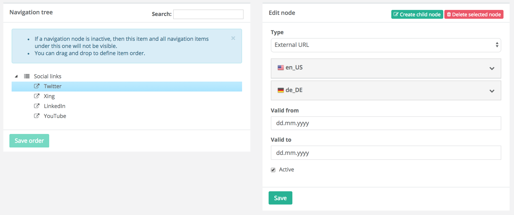

Release Notes - October - 1 2017
Features
CMS Page Preview
Introducing CMS Page Preview, for previewing a working version of your content before publishing it live. This feature gives you the chance to judge the final look of CMS placeholder content as it will appear in the final layout.
The CMS Page Preview has an option to view draft CMS pages before publishing. To be able to preview a CMS page your Zed user needs to be linked to an Yves customer account. To do so go to User Control / User / Assign Customers. Here you can assign multiple Yves customers to your Zed user. Once you have the necessary customer linked to the Zed user, make sure that you are logged-in in Zed with your Zed account as well as logged-in in Yves with the assigned customer account. Now you can preview drafts of your CMS pages by navigating to Content Management / Pages / View / Preview.

Affected Modules
Documentation
For module documentation see: CMS - Preview Draft Page, Under the Hood - Customer User Connector.
For feature integration see: Feature Integration - Customer User Connector.
For detailed migration guides see: CMS Collector Module Migration Guide from Version 1. to 2..
Migration Guides
To upgrade, follow the steps described below:
- Apply every minor and patch:
composer update "spryker/*"- Once that is done, upgrade to the new module major and its dependencies:
composer require spryker/cms-collector:"^2.0.0" spryker/customer-user-connector:"^1.0.0" spryker/customer-user-connector-gui:"^1.0.0"Validity Dates for Navigation Nodes
In certain cases, a validity date needs to be applied to specific navigation nodes. This is mostly done for promotional reasons. For example it might be necessary to promote a Christmas category only during a two week period. This category is linked to the navigation but should only appear in the navigation for two weeks. With this release, we introduced date boundaries for navigation nodes. You can now control node visibility over time by using the optional values "from/to". These dates are applied to the node and all its descendants.

Affected Modules
| Major | Minor | Patch |
|---|---|---|
| - Navigation 2.0.0 - NavigationGui 2.0.0 |
n/a | - NavigationCollector 1.0.3 |
Documentation
For module documentation see: Navigation Module Guide, Under the Hood - Navigation.
For feature integration see: Feature Integration - Navigation.
For detailed migration guides see: Navigation Module Migration Guide from Version 1. to 2., NavigationGui Module Migration Guide from Version 1. to 2..
Migration Guides
To upgrade, follow the steps described below:
- Apply every minor and patch:
composer update "spryker/*"- Once that is done, upgrade to the new module major and its dependencies:
composer require spryker/navigation:"^2.0.0" spryker/navigation-gui:"^2.0.0"Multi-currency for Orders
We are currently working on full enablement of multi-store and multi-currency concepts. In subsequent releases we will be gradually enabling every relevant functionality with multi-store and -currency.
This release focuses on enabling multi-currency for orders. It allows saving currency code and store when order is placed. Further more different currencies can be displayed in Zed order detail pages as well as in the Yves customer overview.
Affected Modules
Documentation For detailed migration guides see: Sales Module Migration Guide from Version 7. to 8..
Migration Guides
To upgrade, follow the steps described below:
- Apply every minor and patch:
composer update "spryker/*"- Once that is done, upgrade to the new module major and its dependencies:
composer require spryker/sales:"^8.0.0"Improvements
oryx-for-zed Version Update to 1.1.1
jquery-migrate has been updated from version 3.0.0 to 3.0.1. In this process, a change has been introduced to the module's AMD properties. This change breaks Zed frontend build process, specifically webpack (see issues 273).
In order to solve this issue, oryx-for-zed has been updated to version 1.1.1 with a fix for webpack configuration that allows the build to succeed. The fix is BC compatible, so it works well with jquery-migrate 3.0.0 and 3.0.1.
To adopt the latest oryx-for-zed (version 1.1.1) you can:
- re-run ./setup -i in your dev VM
- alternatively remove the node_modules folder from the project root and run npm i followed by npm run zed
New Interface to Allow Shipment and Payment Method Grouping
Previously in checkout, shipment methods and payment methods were listed without carrier and provider grouping. In this release, we added a new interface to the StepEngine module for providing a payment method type when creating sub-forms for payment providers. Now in checkout you can group shipment and payment methods by provider.
Affected Modules
| Major | Minor | Patch |
|---|---|---|
| n/a | - DummyPayment 2.1.0 - StepEngine 3.1.0 |
n/a |
Logging Exceptions in a Human-readable Format
Previously, all logs were written into the application.log file. From now on when you configure $config[LogConstants::EXCEPTION_LOG_FILE_PATH] the ErrorLogger will write exceptions in human-readable format, including the stack trace into the configured file.
Affected Modules
| Major | Minor | Patch |
|---|---|---|
| n/a | - Application 3.5.0 - Log 3.1.0 |
n/a |
CallbackHandler for Exception Logging
Previously, exceptions were not written to a log file. We added a new CallbackHandler to our WhoopsErrorHandlerServiceProvider which now calls ErrorLogger::getInstance()->log($exception). This makes exceptions visible in the log file.
Affected Modules
| Major | Minor | Patch |
|---|---|---|
| n/a | n/a | - ErrorHandler 2.1.3 |
Cache for Already Located Classes
Previously, the locator was locating classes over and over again. We now changed this behavior to directly return new instances of already located classes.
Affected Modules
| Major | Minor | Patch |
|---|---|---|
| n/a | - Kernel 3.9.0 | n/a |
fromArray() Method Performance
To optimize performance, we updated the fromArray() method in AbstractTransfer. fromArray() was transforming every transfer property name from underscore into camel case in every call and taking unnecessary time to do so. The implemented solution adds a new name map in the transfer object itself during the generating phase that maps underscore and camel case names together. This allows the method fromArray() to only do lookups without transforming property names consequently improving the fromArray() method's performance.
Affected Modules
| Major | Minor | Patch |
|---|---|---|
| n/a | - Kernel 3.10.0 - Transfer 3.4.0 |
n/a |
StorageClient Optimization
With this release, we introduced a few optimisations to StorageClient. StorageClient had an issue with cache for storage multi keys getter. These keys were not marked as used and were lost from the cache in the next request. This issue is now fixed . So far, values were stored as json_encoded and we were decoding them on each storage call. Now an additional cache is applied for decoded values.
Affected Modules
| Major | Minor | Patch |
|---|---|---|
| n/a | n/a | - Storage 3.3.1 |
Add-to-cart Function Performance
The add-to-cart function was formerly quite slow because of a high number of redundant queries. To speed up the add-to-cart we have reduced the amount of queries by removing has/get pairs and optimised the slow queries.
Affected Modules
| Major | Minor | Patch |
|---|---|---|
| n/a | n/a | - Price 4.2.3 - ProductBundle 3.2.3 - ProductImage 3.3.1 - ProductSearch 5.1.3 |
Force HTTPS
Previously SSL related code for Yves was in ApplicationServiceProvider, this code has been moved to a new SslServiceProvider in Spryker's Application module. Please remove the SSL related code from the ApplicationServiceProvider and use the new SslServiceProvider. Checkout our HowTo - Force HTTPS for more details.
Affected Modules
| Major | Minor | Patch |
|---|---|---|
| n/a | - Application 3.6.0 | n/a |
Failed Add-to-cart Items from Wishlist
With this release, the Yves wishlist client now gets information about failed product items (availability, status, etc.) and shows a relevant message.
Affected Modules
| Major | Minor | Patch |
|---|---|---|
| n/a | - Wishlist 4.2.0 | n/a |
OMS Performance Due to Missing Indexes in PostgreSQL
Previously, OMS processing redundantly searched for spy_sales_order_item_metadata and spy_oms_order_item_state_history, information. The results of this query returned all OMS history for a state, resulting in a slow performance. This issue has been fixed by applying OMS and Sales performance optimization.
Affected Modules
| Major | Minor | Patch |
|---|---|---|
| n/a | n/a | - Oms 7.1.1 - Sales 8.0.3 |
Standalone Facets
Spryker provides a Search module and a convenient mechanism for facet management. To prevent heavy queries and slow search responses, we kept facet creation simple but make it possible to implement custom facet management for a project through extension points. With this release, we extended our facet management and made custom (standalone) facets available "out of the box". Now it is possible to activate standalone facets for projects without additional implementation, but simply through configuration.
Affected Modules
| Major | Minor | Patch |
|---|---|---|
| n/a | - Search 6.7.0 | n/a |
Bugfixes
Return If Object Already Dumped
Propel has a check if an object was already dumped and will return a string *RECURSION* instead of the expected array. Previously, this was not adequately taken into account. When trying to add fk_customer to the expected array after an object was dumped, an exception was thrown. This issue is fixed.
Please note same fix has been also back-ported to version 7.*.
Affected Modules
| Major | Minor | Patch |
|---|---|---|
| n/a | n/a | - Sales 8.0.1 |
Invalidate Cache File When Opcache Enabled
Fixed, issue with unresolveable.cache file not invalidated after it was changed.
Affected Modules
| Major | Minor | Patch |
|---|---|---|
| n/a | n/a | - Kernel 3.7.3 |
Invalidate .pathCache After File Was Changed
Fixed issue with the .pathCache file not invalidating after it was changed.
Affected Modules
| Major | Minor | Patch |
|---|---|---|
| n/a | n/a | - Twig 3.2.3 |
Config Profiler Template Path
Previously, when the config profiler was used on case-sensitive systems Twig threw an exception. The template was not found because of a wrong path to the profiler template. This issue has been fixed.
Yves AbstractPlugin's were not able to retrieve the Modules config this is now changed and it's now possible to use it in all Yves Plugins as well as in Zed's Plugins.
To migrate to these change:
- Replace Pyz/Shared/Application/Plugin/Provider/WebProfilerServiceProvider.php in YvesBootstrap with Pyz/Yves/WebProfiler/Plugin/ServiceProvider/WebProfilerServiceProvider.php
- Replace Pyz/Shared/Application/Plugin/Provider/WebProfilerServiceProvider.php in Zed's ApplicationDependencyProvider with Pyz/Zed/WebProfiler/Plugin/ServiceProvider/WebProfilerServiceProvider.php
Affected Modules
| Major | Minor | Patch |
|---|---|---|
| n/a | - Kernel 3.8.0 | - Config 3.1.1 |
Default Store Fix
Previously, the store for testing was hardcoded. With this update, the test will try to find a store by:
- environment variable "APPLICATION_STORE"
- from server "$_SERVER['APPLICATION_STORE']"
- from default_store.php
- from stores.php
If none can be found it will throw an exception. With this release we have also updated the Codeception version.
Affected Modules
| Major | Minor | Patch |
|---|---|---|
| n/a | - Testify 3.4.0 | n/a |